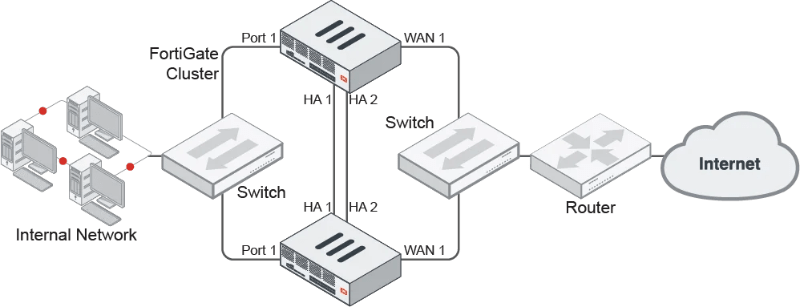

请访问原文链接：FortiGate FGCP HA 配置文档 查看最新版。原创作品，转载请保留出处。
作者主页：sysin.org
防火墙 HA 配置系列文章：
- Cisco Firepower FTD HA 配置文档
- FortiGate FGCP HA 配置文档
- Palo Alto PAN-OS Active/Passive HA 配置文档
- Juniper SRX JSRP 配置文档
概述
FortiOS 提供 6 种冗余解决方案，工业标准的 VRRP 和 5 种专有的解决方案：
- FortiGate Cluster Protocol (FGCP) high availability，
- FortiGate Session Life Support Protocol (FGSP) high availability，
- Session-Aware Load Balancing Clustering (SLBC)，
- Enhanced Load Balanced Clustering (ELBC)，
- Content Clustering.
FGCP HA 是 ForitOS 最常用的 HA 配置方式，也是本文描述的内容。
FGCP HA 参考拓扑：

FGCP HA
FortiGate HA 集群由为 HA 操作配置的两到四个 FortiGate 组成。集群中的每个 FortiGate 称为集群设备。所有集群设备必须是相同的 ForitGate 型号，安装相同的 FortiOS 固件版本。所有集群设备还必须具有相同的硬件配置 (例如，相同数量的硬盘等等)，并以相同的操作模式 (NAT 模式或透明模式) 运行。
您可以创建最多由四个 FortiGate 组成的 FGCP 集群。
此外，集群设备必须能够通过心跳接口彼此通信。创建集群并继续运行集群需要这种心跳通信。没有它，集群就像独立 FortiGate 的集合。
在启动时，使用相同的 HA 配置配置集群设备并连接它们的心跳接口之后，集群设备使用 FortiGate 集群协议 (FGCP) 査找为 HA 操作配置的其他 FortiGate，并协商创建集群。在集群操作期间，FGCP 通过心跳接口链接在集群设备之间共享通信和同步信息。这种通信和同步称为 FGCP 心跳或者 HA 心跳。通常，简称为心跳。
集群使用 FGCP 选择主设备，并提供设备、链接和会话故障转移。FGCP 还管理两种 HA 模式：主动 - 被动 (故障转移 HA) 和主动 - 主动 (负载均衡 HA)。
不同步的配置
FGCP 使用增量同步和周期性同步的组合，以确保所有集群设备的配置与主设备的配置同步。这意味着在大多数情况下，你只需进行—次配置更改，就可以将其同步到所有集群设备。这包括包含额外信息的特殊配置设置 (例如，第三方证书、替换消息文本文件和图形等)。
某些配置设置不同步，以支持 FortiGate 某些特定操作。以下设置在集群设备之间不同步：
- FortiGate 主机名。允许你识别集群设备。
- GUI 仪表板配置。故障转移只有，你可能必须重新配置仪表板小部件。
- HA 覆盖。
- HA 设备优先级。
- 虚拟集群 1 和虚拟集群 2 设备优先级。
- ping 服务器或死网关检测配置的 HA 优先级 (ha-priority) 设置。
- 成为 HA 保留管理接口的 FortiGate 接口的系统接口设置。
- 保留管理接口的默认路由，使用
config system ha命令的ha-mgmt-interface-gateway选项设置。 - 动态加权负载均衡阈值和高低水印。
- OSPF summary-addresses 设置。
此外，许可证是不同步的，因为每个 FortiGate 必须单独许可。这包括 FortiCloud 激活和 FortiClient 许可，如果你购买了超过 10 个虚拟域 (VDOM)，则输入一个许可密钥。
HA 工作模式
Active-Passive（A-P）模式：
集群中的所有防火墙必须工作在同一个模式下。可以对运行中的 HA 集群进行模式的修改，但会造成一定的延时，因为集群需要重新协商并选取新的主设备。A-P 模式提供了备机保护。HA 集群中由一台主设备，和一台以上到从设备组成。
从设备与主设备一样连接到网络，但不处理任何的数据包，从设备处于备用状态。从设备会自动同步主设备的配置，并时刻监视主设备到运行状态。整个失效保护的过程是透明的，一旦主设备失效，从设备会自动接替其工作。如果设备的接口或链路出现故障，集群内会更新链路状态数据库，重新选举新的主设备。
Active-Active（A-A）模式：
A-A 模式下会对占用资源较多的进程进行在各个设备中进行分担。需要处理协议识别、病毒扫描、ips、网页过滤、邮件过滤、数据防泄露、应用程序控制、voip 内容扫描、协议保护（HTTP，HTTPS，FTP，IMAP，IMAPS，POP3，SMTP，SMTPS，IM，NNTP，SIP，SIMPLE），SCCP 协议控制等。通过对如上内容的负载均担，A-A 模式可以提供更高的 UTM 性能。安全策略中的终端控制，流控，用户认证功能，在 A-A 模式下没有什么提高效果。其他非 UTM 功能不会进行负载分担，将由主设备进行处理。除了 UTM 功 能外，还可以实现对 TCP 会话进行分担。
AA 模式下，集群中的主设备负责对所有通信会话的处理，然后将部分负载分发到所有从设备上。从设备可以说是活动的，因为要处理 UTM 的相关会话。但从设备只处理由主设备分配的数据，不会响应 arp 等。其他方面 AA 模式和 AP 模式是相同的。
单机配置同步、单机会话同步模式
从 5.0 版本开始，全新 NGFW 下一代防火墙支持单机配置同步、会话同步功能，在一些应用场景中它可以代替双机 HA 功能，实现控制异步流量的目的。
HA 配置要求
进行 HA 配置，硬件和软件版本需满足如下要求：
-
防火墙硬件型号相同；
-
同型号硬件要求硬件版本，内存容量，CPU 型号，硬盘容量等相同；
-
相同的软件版本；
-
设备的所有接口不能工作在 DHCP，PPPOE 模式下。没有使用的接口 IP 地址模式也需要选择为 “自定义”；
假如 HA 的两台 FGT 存在上述不一致的情况，那么做为备机的 FGT 将会被 Shutdown 主动关闭。
串口下将会打印 shutdown 并提示原因：
1 | slave and master have different hdisk status. Cannot work with HA master. Shutdown the box! |
HA 配置步骤
步骤 1、配置设备 1 的 HA
步骤 2、配置设备 2 的 HA
步骤 3、组建 HA
步骤 4、查看 HA 集群
HA 配置建议
-
进行 HA 环境下更换设备前，进行配置备份，防止操作失误而造成的配置丢失。
-
建议配置两条以上的心跳线缆，防止单心跳故障造成 HA 机群崩溃，使用独立的心跳接口，尽量避免与业务口混用。
-
优先使用光纤接口。
-
开启会话同步：set session-pickup enable(默认关闭) 或者在 WEB 上启用 “会话交接”
-
谨慎使用 override 功能。开启 override 后设备选举过程中 HA 优先级参数高于设备运行时间参数，可能造成期望成为备机的设备被选举为主设备，造成反向同步配置信息。
-
更改默认的 HA 组的 ID，避免同一个广播域内存在多个 HA 机群，而造成接口的虚拟 MAC 冲突
-
选择正确的监控端口和心跳端口，在开启 vdom 虚拟 cluster 时候，每个 cluster 需要单独配置。
-
如果开启 ping server 功能，则需要再 HA 配置中添加相应的配置命令。
-
建议将与防火墙相连的交换机接口配置为 stp portfast 模式，发生接口 Up/Down 切换时，交换机的接口可立刻进入转发状态，而不需要 stp 状态进行侦听、学习、转发等延迟步骤后接口才转发数据。
FGCP HA 配置实例
1. 配置任务概述：两台设备配置主备模式
网口：
- port1 用作内网口
- port2 用作外网口
- port3 和 port4 用作 heartbeat
连线：
- port1、port2 以及 MGMT 口正常连接网线到交换机
- port3 和 port4 暂不连接网线
1）主设备：已经在网络配置运行的机器，或者是新机器可以配置一下管理 IP 即可
The FortiGate already on the network will be configured to become the primary unit by:
- Licensing it (if required)
- Enabling HA
- Increasing its device priority
- Enabling override // 全新机器不需要启用 override (sysin)
2）备机：如果不是新机器需要恢复出厂设置，创建群集后所有设置将被主设备覆盖
The new FortiGate will be prepared by:
- Setting it to factory defaults to wipe any configuration changes
- Licensing it (if required)
- Enabling HA without changing the device priority and override
- Connecting it to the FortiGate already on the network.
The new FortiGate becomes the backup unit and its configuration is overwritten by the primary unit.
2. 配置群集
1）主设备
1 | config system global |
清空 arp 表
arp -d
查看 MAC 地址更新
get hardware nic (或者 diagnose hardware deviceinfo nic)
2）备机
1 | execute factoryreset |
3. 连接群集
将 heartbeat 端口网线直连，这里是 port3 和 port4，这是主备设备将发现对方并协商创建群集，主设备将配置同步到备机上。
4. 校验群集并禁用 orveride
登录主机执行如下命令
1 | diagnose sys ha checksum cluster |
可以看到所有群集成员的 checksum 相同，表示已经同步完成。
也可以在 web 界面的 HA Status Dashboard 查看群集同步状态
在主设备上执行如下命令禁用 override，若不取消这项设置，主设备将始终保持主机状态无法实现故障转移
1 | config system ha |
查看最近的 HA 系统状态时间
1 | show HA Historical Events |
5. 测试故障转移
在内网长 ping 8.8.8.8
关闭主设备
可以观察有丢包产生，网络仍然可以正常访问
6. 相关命令
-
重启和切换
- 软切换：diagnose sys ha reset-uptime
- 重启防火墙：exec reboot （只重启主防火墙，将导致主备切换）
-
查看设备系统状态
- 查看系统基本信息：get sys status
- 查看系统状态信息：get sys performance status
-
查看接口状态
- 查看单接口状态：diagnose hardware deviceinfo nic 接口名
- 查看聚合接口状态：diagnose netlink aggregate name 聚合接口名
- 关闭接口线速转发：diagnose npu np2 fastpath-sniffer enable Port-Number
注：该配置只在工作机有效（diagnose 命令），当设备切换时，原备机没有这个配置
-
查看 HA 状态
-
登录备墙，需要先用 admin 登录到主防火墙后执行：exec ha manage 0 或 1
-
查看主备机配置是否同步：diag sys ha showcsum
查看主备机输出是否一致，如果一致则表明配置已同步。
-
查看 HA 状态：get sys ha status
-
-
查看会话
查看会话：diagnose sys session stat 或 diagnose sys session full-stat
-
查看系统 ARP 表项
- 查看 ARP 表：get sys arp
- 查看丰富 ARP 信息：diagnose ip arp list
-
查看当前系统进程
-
查看系统进程：diagnose sys top 5 99
-
杀进程：diagnose sys kill 11 进程 ID 或 dia sys kill 9 进程 ID
注意：kill 11 有日志，kill 9 没有日志。
-
HA-Cluster 不中断升级过程
-
在主机 Web 界面上点击升级按钮。
-
主机把 OS 发给备机，备机准备并开始升级，然后自动重启，此过程需要 5 分钟（或更长时间），请耐心等待。
-
备机升级完成，并切换成主机。
-
主机观察到备机升级成功并切换为新的主机后，开始准备升级，此过程需要 5 分钟（或更长时间），请耐心等待。
-
一旦准备完成，主机（此时为备）自动重启加载升级后 OS ，重启约 2 分钟。
-
主机（此时为备）重启后，形成 HA。主机从原来的备同步配置（外部配置和内部配置），约 1~3 分钟。
此时，HA 重新建立，但是主备关系发生了切换，需要在此时的主（最开始的备）手工执行切换 diagnose sys ha reset uptime 切换原来的主备关系。
HA 配置命令集参考
HA 配置命令 config system ha，如下是常用的配置命令。
1.set group-id 0
配置 HA 机群的组 ID，一个机群内的成员必须有相同的组 ID. 该 ID 会成为生成防火墙接口的的虚拟 MAC 的一个组成因素，因此当同一个广播域有２组以上的 HA 机群的时候需要配置不同的组 ID，防止 MAC 地址冲突.
2.set group-name “FGT-HA”
一个机群内的成员必须有相同的组名字
3.set mode standalone/a-a/a-p
HA 工作模式，常用为 a-p 模式。AA 模式下在 HA 状态中查看到 HA 的角色，有主设备及从设备，通常会被认为工作在主被模式下，实际上主主下设备虽然都在工作，仍会有一台作为集群的主设备用来控制和分配流量和会话给集群中的其他设备。AA 模式默认情况下仅负载均衡 UTM 的流量，所以在下不使用 UTM 功能时建议使用 AP 模式。
4.set password
一个机群内的成员必须有相同的密码
5.set hbdev “port1” 50 “port2” 50
配置心跳接口。其中 50 为优先级，优先级高的被优先使用。
6.unset session-sync-dev
可以配置专门的心跳接口用于会话信息同步，默认和控制信息为同一心跳接口。
7.set route-ttl 10
路由转发表的存活时间。HA 设备之间只同步转发表，不同步路由表。当一个备机被选举成主机后，其原有转发表的存活时间，单位秒。随后通过静态或动态路由协议生成转发表，继续工作。
8.set route-wait 0
主设备收到新的路由条目后，会等待 x 秒后，再同步给从设备。
9.set route-hold 10
主设备进行２次路由同步之间的间隔，防止路由震荡而造成反复更新路由。
10.set sync-config enable
配置文件自动同步，需要开启。
11.set encryption disable
是否允许使用 AES-128 和 SHA1 对心跳信息进行加密和完整性验证。
12.set authentication disable
是否使用 SHA1 算法验证心跳信息的完整性。
13.set hb-interval 2
发送心跳数据包的间隔，单位为每 100ms. 如配置 2，则每 200ms 发送一个心跳信息。
14.set hb-lost-threshold 6
心跳信息连续丢失６个后则认为对方不再存活。
15.set helo-holddown 20
Hello 状态时间。设备加入 HA 机群前等待的时间，防止由于未能发现所有的机群成员而造成 Ha 的反复协商。
16.set arps 5
设备成为主设备后，要发送免费 arp 来宣布自己的 MAC 地址，以便相连的交换机能够及时更新 MAC 地址表，该参数用于配置其发送的数量。
17.set arps-interval 8
发送免费 arp 的间隔，单位秒。
18.set session-pickup enable/disable
关闭或者开启会话同步，默认为 disable。一般需要开启。
19.set session-pickup-delay{enable | disable}
仅对存活 30 秒以上的会话进行同步。开启后会对性能有所优化，但小于 30 秒的会话在 HA 切换的时候会丢失。默认为关闭，谨慎使用。
20.set link-failed-signal disable
防火墙上发生被监控端口失效触发 HA 切换的时候，是否将除心跳口外的所有端口 shutdown 一秒钟的时间，便于与之相连的交换机及时更新 MAC 表。// 这个命令是一个优化命令，其实是建议配置上去的。
21.set uninterruptable-upgrade enable
是否允许无中断升级ＯＳ。系统自动分别对机群内的设备升级，并自动切换，不会造成业务的中断。
22.set ha-uptime-diff-margin 300
当进行 HA 选举时，启动时间为一个选举的一个参数，当２台设备启动时间差小于 300 时则将该部分差异忽略，视为相同。
23.set override disable
默认为 disable，ＨＡ选举按如下顺序进行比较：有效接口数量 > 运行时间 > HA 优先级 > 设备序列号。Enable 情况下，讯据顺序改变。有效接口数量 > HA 优先级 > 运行时间 > 设备序列号。每次设备加入或者离开机群，都会强制整个机群重新进行主设备的选举。
24.set priority 128
HA 优先级，为便于管理，建议主设备 200，从设备 100.
25.set monitor port3 port4
配置需要被监控的端口，其有效数量多的设备成为主设备。
26.unset pingserver-monitor-interface
是否设置 pingserver 监控端口。
27.set pingserver-failover-threshold 0
pingserver 触发的阀值，0 则意味着任何的 pingserver 失效都会触发 HA 的切换。
28.set pingserver-flip-timeout 60
两次 pingserver 失效切换之间的间隔。如 A 发生失效，切换到 B. 切过去之后发现 B 也是失效的，则需要等待 60 分钟的时间允许切换回 A.
29.set ha-mgmt-status enable HA 的带外管理配置命令
set ha-mgmt-interface port1
set ha-mgmt-interface-gateway x.x.x.x
相关产品下载
Fortinet FortiOS 7.6.0 (FortiGate VM deployment Images) - 混合架构防火墙

文章用于推荐和分享优秀的软件产品及其相关技术，所有软件默认提供官方原版（免费版或试用版），免费分享。对于部分产品笔者加入了自己的理解和分析，方便学习和研究使用。任何内容若侵犯了您的版权，请联系作者删除。如果您喜欢这篇文章或者觉得它对您有所帮助，或者发现有不当之处，欢迎您发表评论，也欢迎您分享这个网站，或者赞赏一下作者，谢谢！
 支付宝赞赏
支付宝赞赏
 微信赞赏
微信赞赏
赞赏一下